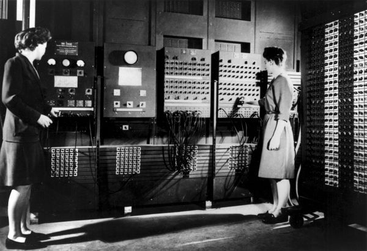

Welcome to our Website Guest
 Evolution of Computing Technology(Part 1)
Evolution of Computing Technology(Part 1)
Introduction:
People lived on the earth for centuies without keeping records, but as social organization such as tribes began to form , record keeping become necessary. The early man use stone and pebbles for counting cattles. Later stone were replaced by sticks , marks on the earth , scratches and symbols on stone , knots on rope etc.. He found it difficult to use to use these computing technology because it needs physical efforts and it's speed was slow . This necessitates the development of new machines for faster and better computation.
Chinese Abacus:

Abacus was one of the earliest calculating device developed by chinese 3000 years ago. It is also called suanpan which means counting board. It cosists of rectangular frame carrying a number of rods of wire. A transverse bar divides each of these rods into 2 unequal portions. On the upper the smaller portion of each rod are 2 beads and on the lower portion 5 beads. Each beads in upper smaller portion has value of 5 while lower portion has value of 1. It is still used in some parts of the world. Sometimes blind people will use an abacus, because they can feel the numbers easily. The most common abacus work by moving beads on rods.
Napier's bone:

A scottish mathematician called John Napier invented method logarithm in 1614.
The use of logarithm enabled him to tranform multiplication and division sums into problems of
additions and subtraction.He called logarithm as artificial number at the beginning
It is combination of 2 greek words , logos meaning ratio and arthmos meaning numbers.
The invention of logarithms was inportant in development of napiers bone.
Napier's bones were invented by John Napier (1550-1617).It was a set of 11 calculating rods and each rod is further divided into 9 diagnol numbered part.
This device helped a lot in multiplication and division sums including larger number.
Slide rule:

The slide rule, or slipstick is a mechanical analog computer. The slide rule is used mainly for multiplication and division, and also for "scientific" functions such as roots, logarithms and trigonometry, but usually not for addition or subtraction. William Oughtred and others developed the slide rule in the 1620. He invented both standard rectilinesr slide rulr and less commonly used slide rule. The slide rule was based on the work on logarithms by John Napier. It has 2 movable graduated ruler kept side by side. Each ruler has been marked off in such a way that the actual distance from beginning of the ruler is propotional to the logarithm of the number printed in the ruler.
Pascaline:

A French Mathematician called Blaise Pascal invented first mechanical calculating machine called pascaline in 1642. It was developed to help his father who was a tax collector in calculating tax. The machine worked with wheels , gears and dials The numbers were entered by dialing a series of numbered wheels , where the movement of the wheels starts at 9 and moves to 0. The disadvantage was its limitation to addition and subtraction , while multiplication and division were done by performing series of addition or subtraction.
Stepped reckoner:

A German mathematician Gottfriend Von Leibnitz invented stepped reckoner in 1671. He improved pascaline by creating a machine that could perform all 4 basic mathematical operation such as addition , subtraction , multiplication and division. It could evaluate square roots by series of stepped additions. His nachine used stepped cylinders each with 9 teeth of varying length and introduced a new concept called shifting machine. Moving a digit to right orleft is called shift. He achieved this through a series of sliders.
Jacquard's loom:
Joseph Marie Jacquard was a french silk weaver. He invented automated loom in 1804 that used punch cards to weave and design patterns on cloth. The function of the loom depended upon the existence of holes on the card. Thus Jacquard's loom paved the way for the modern storage mechanism on punched cards and binary coding system.
Babbage's Engine(Difference and Analytical engine):
Charles Babbage was an english born inventor and mathematician .
He designed an automatic mechanical calculating machine called difference engine in 1823
that could solve equation by calculating differences between them.
It was fully automatic in both calculating and printing output tables.
It was controlled by a fixed instruction program that executed only in precise linear sequence.
This analytical engine the first fully automatic calculating machine.
Conceived by him in 1834 , this machine was designed to evaluate any mathematical formula and to have even higher power of analysis than his
original difference engine in 1820s.
Charles Babbage was honoured as the father of computer as a result of his contribution to basic design to computer.
Lady Augusta Ada Lovelace:

Ada Lovelace (December 10, 1815 to November 27, 1852) was a British mathematician and computer engineer who improved upon the designs of Charles Babbage. Her work is considered to be the first written computer algorithm in that it contain written instructions for a machine to follow. In 1843 she published a translation from the french of an article on analytical engine by an Italian engineer ,Luigi Menabrea to which Ada added extensive notes of her. The notes include the first published description of stepwise sequence of operation for solving certain mathematical operation.Ada is reffered as first programmer. In 1979 the Us Defence Department named a progrmamming language ADA in her honour.
George Boole:
George Boole was a British mathematician whose work on logic laid many of the foundations for the digital revolution. The Lincolnshire-born academic is widely heralded as one of the most influential mathematicians of the 19th century, devising a system of logic that aimed to condense complex thoughts into simple equations. His development of 'Boolean logic' paved the way for the computer age. His legacy was Boolean logic, a theory of mathematics in which all variables are either "true" or "false", or "on" or "off". The theory preceded the digital age, with American Claude Shannon applying Boolean logic to build the electrical circuits in the 1930s that led to modern computers.
Tabulating machine:
The tabulating machine was an electromechanical machine designed to assist in summarizing information stored on punched cards. Invented by Herman Hollerith, the machine was developed to help process data for the 1890 U.S. Census. Later models were widely used for business applications such as accounting and inventory control. The Hollerith tabulating system was the first to make practical use of punch card in data processing.Hollerith started his own business in 1896 founding the tabulating machine company. In 1911 4 coporation including hollerith's firm merged to form Computing Tabulating Recording(CTR). In 1924 CTR was renamed International Business Machine(IBM).
Mark-I:

Howard Aiken of Harvard University in collabration with engineering at IBM undertook construction
of a large automatic digital computer based on standard IBM electromechanical part called MARK-I in
1937. The Mark-I became operational in 1944 and was used until 1959.
The Mark-I was officially known as the IBM Automatic Sequence Controlled Calculator(ASCC).
The machine was complex in design and huge in size.It measured 51 ft long , 8ft tall and 3 ft wide having 1800 vaccum
tubes. It contained 7 lakhs 50 thousand parts and weighed approximately 32 tons.This machine used
instruction stored in paper tapes and punched cards ,handling 23 decimal place number and could add or subtract
2 of these numbers in three-tenths of a second , multiply them in 4 seconds and dividethem in 10 second
Atanasoff Berry Computer(ABC):
The Atanasoff-Berry Computer (ABC) was the first electronic computer. It was designed and built by John Vincent Atanasoff and his assistant, Clifford E. Berry in 1937. Atnasoff set out to build a machine that would help his graduate students to solve systems of partial differential equations.This machine weighed 750lbs and had a memory storage of 3000 bits(0.4K)
Electronic Numerical Integrator and Calculator(ENIAC):
ENIAC was the first electronic general purpose computer invented by John Mauchly and J.P. Eckert in 1946 at Moore School of Electrical Engineering of University of Pennsylvania.This machine was build to meet the needs of US Armed forces. ENIAC was designed and primarily used to calculate artillery firing tables for the United States Army's Ballistic Research Laboratory. It contained 20,000 vacuum tubes, 7200 crystal diodes, 1500 relays, 70,000 resistors and 10,000 capacitors. It weighed more than 30 short tons and consumed 150 kW of electricity. ENIAC used a word of 10 decimal digits instead of binary digits.It could perform many complex arthemetic operation in less than a second.
Electronic Delay Storage Automatic Calculator(EDSAC):
Electronic Delay Storage Automatic Calculator, EDSAC is an early British computer considered to be the first stored program electronic computer. It was created at the University of Cambridge in England, performed its first calculation on May 6, 1949, and was the computer that ran the first graphical computer game, nicknamed "Baby."It was made by Maurice Wilkes and his team at the university of cambridge mathematical labratory in England It was first to run a computer game .Later the project was supported by J.lyons and Co.Ltd , a British company. EDSAC is used to calculate a table of square numbers and list of prime numbers.
Electronic Discrete Variable Automatic Computer(EDVAC):
EDVAC was designed by John Mauchly and J.P. Eckert in 1952.It was second stored program computer . It included a stored program , a central processor and a memory for both data and programs. It contained approximately 4000 vaccum tubes and 10000 crystals diodes when it was finally completed.
Universal Automatic Computer-I:

The UNIVAC-I was the second commercial computer produced in the US.It was design principally by J.P Eckert and John Mauchly.It was also based on EDVAC design.UNIVAC I used 5,000 vacuum tubes, weighed 16,000 pounds (7.3 metric tons), consumed 125 kW, and could perform about 1,905 operations per second.It became operational at the Census Bureau in 1951 for use in census taking. The computer consisted of magnetic tape for data input and output.The UNIVAC I had an add time of 120 microseconds , multiply time of 180 microseconds , and divide time of 3600 microseconds.
Programmed Data Processor-1:
The PDP-1 was the first computer in digital equipment coporation's PDP series and was first produced in 1959. It had 5 megacycle circuits , a magnetic core memory and fully parallel processing with a computation rate of 100000 additions per second.It was the original hardware for playing history's first game on minicomputer,Steve Russell's Spacewar.